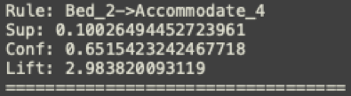

Lechuan Qiu
Project Part 2
Exploring
Before creating an accurate predictive model, Association Rules Mining Analysis is a very useful tool for exploring the data and looking for hidden relationships. To perform the analysis, the Apriori Algorithm was utilized. Initially, a subset of 7 variables was selected, which included Price, Property types, Number of Accommodates, number of bathrooms/bedrooms, etc.
Surprisingly, the strongest rule is between “2 beds” (Offering 2 beds for guests) and “4 Accommodates” (Available for 4 guests). “Sup” with the value “0.1002,” tells that from about 40000 listings, 10% of the hosts are offering 2 beds for 4 people. Besides this, the rest of the strong rules are all about room type. This exposes the fact that, in the dataset almost every single row has room type, and it is either “Entire house” or “Private room”.
This is easy to understand from the host perspective. Instead of using other terms to describe their offerings, 2 bed for 4 people is indeed a very attractive combination for traveler, since it is flexible for different type of party and different traveling purpose.
Therefore, the variables Property type and Room type were dropped from the subset. For the new subset, three different support levels were selected: 0.25, 0.5, and 0.75. With this new subset of data, association rules relating to price range were shown in the results. The price column is binned into 5 different groups based on the value of price. “Price_1” has the lowest price range and “Price_5” has the highest price range. The following rules imply a positive relationship between the price and the house capacity i.e. a house with a larger capacity will have a higher price range.
Also, since all the results come from the same dataset, a different “sup” value did not make a big difference on the strongest rules, such as “Price_1” and “Accommodate_1”, “Bed_2” and “Bathroom_1”, “Bed_2” and ”Bedroom_2”. The appearance of these frequent rules and patterns mostly result from the nature of houses and human behavior. Most houses have similar features and construction standards, this makes the listings show similar patterns. Also, listings’ information is edited by the hosts, so they can control the listings information to make it more attractive to guests. The rule like “Bed_2” and “Accommodate_4” is a good example of how hosts try to attract more guests